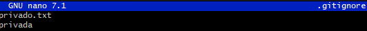

Ejercicios Git y GitHub
Repositorio DEAW
-
- Crearemos un repositorio en GitHub llamado DEAW.

-
- Clonaremos dicho repositorio en local.
Commit inicial
-
- Realizar un commit inicial con el comentario
Comenzamos con los ejercicios de Git
- Realizar un commit inicial con el comentario
Push inicial
- SUbir los cambios al repositorio remoto.

Ignorar archivos
-
- Crear en el repositorio local un fichero llamado privado.txt.
-
- Crear en el repositorio local una carpeta llamada privada.
-
- Realizar los cambios oportunos para que tanto el archivo como la carpeta sean ingorados por git.

Añadir fichero 1.txt
-
- Añadir fichero 1.txt al repositorio local.
Crear el tag v0.1
git tag V0.1
Subir el tag v0.1
git push --tags

Cuenta de github
- Poner una foto de vuestro perfil de GitHub.
- Para cambiar la foto de perfil deberemos ir a configuración de github y hacer click en cambiar foto

Y así queda la foto cambiada:

-
Poner el doble factor de autentificación en vuestra cuenta de Github
- Para añadir el doble factor de autentificación deberemos irnos al apartado de contraseñas y autenticación, en donde añadiremos los métodos de autenticación de doble factor que queramos.
"
Uso social de github
-
Preguntar los nombres de usuario de GitHub de 2 de tus compañeros de clase, búscalos, y síguelos.
-
Buscamos los usuarios y le damos a seguir:
-
Seguir los repositorios DEAW del resto de tus compañeros.
-
Dentro del repositorio, le daremos a watch all activity y ya estaremos siguiendo el repositorio

-
Añadir una estrella a los repositorios DEAW del resto de tus compañeros.
-
Para dar una estrella haremos clic en star y así habremos dado una estrella
Crear una tabla
- Crear una tabla en markdown con la información de varios de tus compañeros de clase.

Colaboradores
-
Poner a un compañero como colaborador en el repositorio DEAW
-
Para añadir un colaborador deberemos ir a settings dentro del repositorio. Una vez dentro iremos a colaboradores y haremos clic en añadir personas

Crear una rama v0.2
-
Crear una rama
v0.2. -
Para crear una rama nueva lo haremos con la siguiente rama
git branch v0.2
Posiciona tu carpeta de trabajo en esta rama, antes de esto hay que hacer commit de cualquier cambio.

Añadir fichero 2.txt
- Añadir fichero 2.txt en la rama
v0.2.

Cramos la rama remota v0.2
-
Subir los cambios al repositorio remoto
-
Para subir la rama v0.2 usaremos el siguiente comando.
Merge directo
-
Posicionarse en la rama main
-
Hacer un merge de la rama v0.2 en la rama master
Merge con conflicto
- En la rama
masterponer Hola en el fichero1.txty hacer commit

- Posicionarse en la rama v0.2 y poner Adios en el fichero "1.txt" y hacer commit.
-
Posicionarse de nuevo en la rama master y hacer un merge con la rama v0.2
-
Una vez que hemos hecho los cambios en cada rama hacemos un merge y nos indicara que hay un conflicto.
- Para resolverlo nos iremos al archivo y nos quedaremos con los cambios de la rama que queramos
- Una vez que hemos dejado el archivo con los cambios correctos y realizamos un commit
Listado de ramas
-
Listar las ramas con merge y las ramas sin merge
-
Para listar las ramas con merge usaremos el siguiente comando
git branch --merged
- Para listar las ramas sin merge usaremos el siguiente comando
git branch --no-merged
Arreglar conflicto
- El conflicto fue arreglado en el paso anterior
Borrar rama
- Crear un tag v0.2
- Borrar la rama v0.2
Listado de cambios
- Listar los distintos commits con sus ramas y sus tags.
- Para listar los cambios usaremos el comando:
git log --oneline --decorate --graph --all

Ejercicios Git y Github II
Ejercicios de creación y actualización de repositorios
Ejercicio 1
-
Configurar Git definiendo el nombre del usuario, el correo electrónico y activar el coloreado de salida.
-
Para configurar el nombre de usuario usaremos el comando:
git config user.name nombre_usuario
- Para configurar el email de usuario usaremos el comando:
git config user.email email_usuario
- Y por último configuraremos el coloreado de salida.
git config color.ui auto

Ejercicio 2
- Crear un repositorio nuevo con el nombre libro y mostrar su contenido
-
Usaremos los siguientes comandos para crear el repositorio libro:
mkdir libro cd libro git init -
Para mostrar el contenido usaremos el comando:
ls -l
Ejercicio 3
- Comprobar el estado del repositorio.
- Como hemos podido ver en la anterior captura el repositorio está vacío
- Crear un fichero indice.txt con el siguiente contenido:
touch indice.txt - Comprobar de nuevo el estado del repositorio.
- Añadir el fichero a la zona de intercambio temporal.
git add indice.txt
- Volver a comprobar el estado del repositorio.

Ejercicio 4
- Realizar un commit de los últimos cambios con el mensaje “Añadido índice del libro.” y ver el estado del repositorio.
git commit -m "Añadido índice del libro."
Ejercicio 5
-
Cambiar el fichero indice.txt para que contenga lo siguiente:
-
Mostrar los cambios con respecto a la última versión guardada en el repositorio.

- Hacer un commit de los cambios con el mensaje "Añadido capítulo 3 sobre gestión de ramas"
Ejercicio 6
- Mostrar los cambios de la última versión del repositorio con respecto a la anterior.
git diff HEAD~1 HEAD

- Cambiar el mensaje del último commit por "Añadido capítulo 3 sobre gestión de ramas al índice"
git commit --amend -m "Añadido capítulo 3 sobre gestión de ramas al índice."
-
Volver a mostrar los últimos cambios del repositorio.
-
Esto lo haremos con el mismo comando que en el primer apartado
Ejercicios de manejo del historial de cambios
Ejercicio 1
-
Mostrar el historial de cambios del repositorio.
-
Para mostrar el historial de cambios del repositorio lo haremos con el siguiente comando
git log
- Crear la carpeta capítulos y crear dentro de ella el fichero capitulo1.txt con el siguiente texto.
El flujo de trabajo básico con Git consiste en: 1- Hacer cambios en el repositorio. 2- Añadir los cambios a la zona de intercambio temporal. 3- Hacer un commit de los cambios.
- Añadir los cambios a la zona de intercambio temporal.
git add capitulo1.txt
- Hacer un commit de los cambios con el mensaje "Añadido capítulo 1." Volver a mostrar de cambios del repositorio.

Ejercicio 2
- Crear el fichero capitulo2.txt en la carpeta capítulos con el siguiente texto.
El flujo de trabajo básico con Git consiste en: 1- Hacer cambios en el repositorio. 2- Añadir los cambios a la zona de intercambio temporal. 3- Hacer un commit de los cambios.
- Añadir los cambios a la zona de intercambio temporal.
git add capitulo2.txt
-
Hacer un commit de los cambios con el mensaje "Añadido capítulo 2.".
-
Mostrar las diferencias entre la última versión y dos versiones anteriores.
-
Para mostrar las diferencias entre la última versión y dos versiones anteriores lo haremos con el siguiente comando:
git diff HEAD~2 HEAD
Ejercicio 3
- Crear el fichero capitulo3.txt en la carpeta capítulos con el siguiente texto.
Git permite la creación de ramas lo que permite tener distintas versiones del mismo proyecto y trabajar de manera simultanea en ellas.
- Añadir los cambios a la zona de intercambio temporal.
git add capitulo3.txt
-
Hacer un commit de los cambios con el mensaje "Añadido capítulo 3.".
-
Mostrar las diferencias entre la primera y la última versión del repositorio.
-
Para hacer esto necesitamos primero tenemos que saber el ID del primer commit:
git log
-
Y el ID que vemos a la izquierda es el ID de cada commit en este caso el número 1 es 4233f4b.
-
Ahora hacemos la diferencia con este comando:
git diff 4233f4b HEAD

Ejercicio 4
- Añadir al final del fichero indice.txt la siguiente línea:
Capítulo 5: Conceptos avanzados
- Añadir los cambios a la zona de intercambio temporal.
git add indice.txt
-
Hacer un commit de los cambios con el mensaje "Añadido capítulo 5 al índice."
-
Mostrar quién ha hecho cambios sobre el fichero indice.txt.
-
Para mostrar quién ha hecho los cambios usaremos
git blame indice.txt
Ejercicios de deshacer cambios
Ejercicio 1
- Eliminar la última línea del fichero indice.txt y guardarlo.
- Comprobar el estado del repositorio

-
Deshacer los cambios realizados en el fichero indice.txt para volver a la versión anterior del fichero.
-
Para deshacer los cambios usaremos el siguiente comando:
git restore indice.txt
- Volver a comprobar el estado del repositorio.

Ejercicio 2
- Eliminar la última línea del fichero
`indice.txty guradarlo. - Añadir los cambios a la zona de intercambio temporal.
- Comprobar de nuevo el estado del repositorio.

- Quitar los cambios de la zona de intercambio temporal, pero mantenerlos en el directorio de trabajo.
- Para quitar los cambios de la zona de intercambio, pero mantenerlos en el directorio de trabajo usaremos el siguiente comando:
git reset indice.txt
- Comprobar de nuevo el estado del repositorio.
- Deshacer los cambios realizados en el fichero indice.txt para volver a la versión anterior del fichero.
- Volver a comprobar el estado del repositorio.
Ejercicio 3
- Eliminar la última línea del fichero indice.txt y guardarlo.
- Eliminar el fichero capitulos/capitulo3.txt.
- Añadir un fichero nuevo capitulos/capitulo4.txt vacío.
- Añadir los cambios a la zona de intercambio temporal.
- Comprobar de nuevo el estado del repositorio.

-
Quitar los cambios de la zona de intercambio temporal, pero mantenerlos en el directorio de trabajo.
-
Para hacer esto usaremos los siguientes comandos:
git restore --staged indice.txt
git restore --staged capitulos/capitulo4.txt
git restore --staged capitulos/capitulo3.txt
-
Comprobar de nuevo el estado del repositorio.
-
Deshacer los cambios realizados para volver a la versión del repositorio.
-
Aquí usaremos el mismo comando que en el apartado 6 pero sin la opción --staged. Y para deshacer los cambios del capitulo4 usaremos este comando.
rm capitulos/capitulo4.txt
- Volver a comprobar el estado del repositorio.

Ejercicio 4
- Eliminar la última línea del fichero indice.txt y guardarlo.
- Eliminar el fichero capitulos/capitulo3.txt.
- Añadir los cambios a la zona de intercambio temporal y hacer un commit con el mensaje “Borrado accidental.”
- Comprobar el historial del repositorio.

-
Deshacer el último commit pero mantener los cambios anteriores en el directorio de trabajo y la zona de intercambio temporal.
-
Para mantener los cambios y borrar el commit, deberemos usar el siguiente comando:
git reset --soft HEAD~1
-
El parámetro soft nos permite mantener los cambios y solo deshace el commit.
-
Comprobar el historial y el estado del repositorio.

-
Volver a hacer el commit con el mismo mensaje de antes. 8.Deshacer el último commit y los cambios anteriores del directorio de trabajo volviendo a la versión anterior del repositorio.
-
Ahora usaremos el parámetro --harden vez de --soft para que el directorio vuelve a estar como el último commit antes de borrado accidental.
git reset --hard HEAD~1
- Comprobar el historial y el estado del repositorio.
Ejercicios de repositorios remotos
Ejercicio 1
- Crear un nuevo repositorio público en GitHub con el nombre libro-git.
- Añadirlo al repositorio local del libro.
- Mostrar todos los repositorios remotos configurados

Ejercicio 2
- Añadir los cambios del repositorio local al repositorio remoto de Github.
- Para submit los cambios a git deberemos usar el siguiente comando:
git push -u origin master
-
Acceder a Github y comprobar que se han subido los cambios mostrando el historial de versiones.
-
Y como podemos ver, se han subido los cambios
Ejercicio 3
-
Colaborar en el repositorio remoto libro-git de otro usuario.
-
Clonar su repositorio libro-git.
- Para clonar un repositorio usaremos git clone
-
Añadir el fichero autores.txt que contenga el nombre del usuario y su correo electrónico.
-
Añadir los cambios a la zona de intercambio temporal.
-
Hacer un commit con el mensaje “Añadido autor.”
- Subir los cambios al repositorio remoto.
- Esta vez, como la rama en el remoto ya está creada obviaremos el parámetro -u en git push
git push